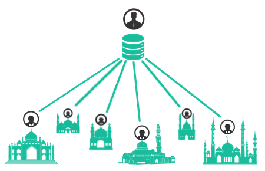

Sistem Informasi Masjid di Kota Bandung merupakan website yang menampung semua data-data
masjid di kota Bandung agar dapat memudahkan pengguna umum dalam mencari informasi masjid yang pengguna
umum butuhkan, website ini telah bekerja sama dengan admin yang terdapat di setiap masjid
dalam menyebarkan berita kegiatan yang akan terus di update dan mempermudah organisasi masjid dalam
berinteraksi antar sesama masjid di Bandung terutama kepada masyarakat di sekitar masjid.
Website ini memiliki beberapa fungsi, yaitu fungsi informasi, fungsi komunikasi dan fungsi entertainment. Fungsi informasi pada web ini menekankan pada kualitas bagian kontennya, karena tujuan situs ini adalah menyampaikan isinya. Fungsi komunikasi melengkapi web dengan fasilitas-fasilitas yang memberikan fungsi-fungsi komunikasi antara masjid dan masjid lainnya, maupun komunikasi dengan pengguna umum. Fungsi entertainment dalam web ini sebagai sarana hiburan dengan menambahkan gambar, musik dan video.
Website ini memiliki beberapa fungsi, yaitu fungsi informasi, fungsi komunikasi dan fungsi entertainment. Fungsi informasi pada web ini menekankan pada kualitas bagian kontennya, karena tujuan situs ini adalah menyampaikan isinya. Fungsi komunikasi melengkapi web dengan fasilitas-fasilitas yang memberikan fungsi-fungsi komunikasi antara masjid dan masjid lainnya, maupun komunikasi dengan pengguna umum. Fungsi entertainment dalam web ini sebagai sarana hiburan dengan menambahkan gambar, musik dan video.


Admin yang diberikan wewenang tertinggi untuk dapat mengelola seluruh website Sistem Informasi Masjid di Kota Bandung.
Atas wewenang tersebut admin utama dapat mengelola data-data admin masjid maupun data-data masjid di seluruh kota bandung.
Selain itu juga admin utama dapat mengelola fitur-fitur yang ada di website seperti berita umum islami dan video sebagai fitur entertainment.
Dalam hal ini admin masjid memiliki wewenang dibawah admin utama, masing-masing admin masjid mewakili masjid yang dia kelola,
Sehingga admin masjid bertanggung jawab terhadap data-data yang terdapat di masjid yang dia kelola, baik data teknis, deskripsi masjid, fasilitas, kegiatan maupun berita yang terdapat di dalam masjid tersebut.